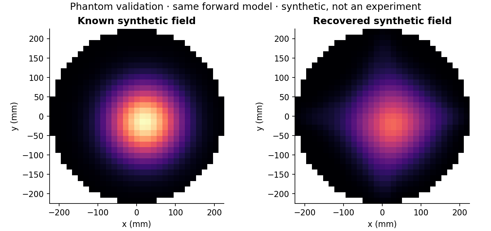

Micron application portfolio / Semiconductor process diagnostics
Evaluate the alarm.
Understand its limits.
From 312 Ar viewing channels to controlled synthetic tests and a separate public measured-data calibration study.
Download full portfolio PDFExplore OES laboratory한국어 OES 실험실Primary case / My SNU diagnostic analysis
Understand the signal before interpreting the map.
Problem
Interpret line-of-sight Ar spectra as spatial information while checking fit quality, reconstruction limits and atomic-data assumptions.
My contribution
Applied the laboratory’s existing CT-OES framework; organised inputs and exclusions, reviewed Gaussian fitting and QC, and examined 31 × 31 reconstructed fields.
Results
312 views · 2,808 fits · 118 QC flags. Retained 412 pixels under model-screening criteria for conditional Te reporting. These counts describe analysis and screening, not predictive accuracy.
Limitations & decision
The noiseless same-forward-model phantom had 29.23% field error. The 2.176 eV median is model-conditional; a small residual does not establish independently accurate physical conditions.
PlasmaSense below is a supporting evaluation extension. The public N₂ study is retrospective and label-assisted, not blind transfer.
Start here / 2-minute review
Results you can inspect
Start with the recruiter Highlights, then trace the results to public evidence. The full technical portfolio remains available.
Read recruiter Highlights · 2 pagesEvidence & reproducibility1. Synthetic Ar states
Compare four detectors under state changes and independent or shared-channel noise. Replay saved results with explicit synthetic labels.
Open the interactive comparison →2. Measured N₂ sessions
Compare transferred and calibrated thresholds on identical future frames. This is separate from the Ar study.
Inspect the decision costs →Supporting case / retrospective label-assisted N₂ recalibration
What does a lower false-alarm rate cost?
Replay a saved operating policy (not blind transfer). The comparison retains the same 37,814 future frames across three physical sessions reused in six roles.
Descriptive means of reused roles, not pooled frame counts or six independent trials. FPR uses normal frames; recall and withheld fraction use labelled leak frames. The reference is dataset-labelled normal, not independently verified by fab sensors.
Reconstruction / synthetic check
Fit to observations is not field accuracy

29.23% field relative L2 error in a noiseless, same-forward-model test. Original retained figure: synthetic, not a measured plasma map or independent accuracy validation.
Inspect the saved reconstruction summaryHow to interpret the comparison
The single-channel logistic classifier is retained; calibration changes the decision threshold and the guard changes which alarms are withheld. This display replays saved aggregate results, not a new fit or a live fault simulation.
The matched calibration-subset mean AUC is approximately 0.998360; the broader role evaluation reports 0.998915. These are different evaluation scopes.
Session A still had 33.22% false alarms after calibration. A full per-session comparison is not displayed because the verified presentation inputs here contain aggregate policies and this residual-session result.
Valve-operation and temporal effects remain confounded with the labels. Automatic alarm suppression was rejected because unconditional recall fell to 52.56%.
Same future frames. Different alarm policies.
Three sessions reused in six roles; descriptive means. Dataset-labelled normal reference: 512 frames. Matched future evaluation: 37,814 frames.
| Policy | False alarms | Unconditional recall | Decision |
|---|---|---|---|
| Transferred threshold | 50.00% | 61.09% | Unreliable across sessions |
| Dataset-labelled normal calibration | 13.56% | 99.39% | Improves this comparison; residual session FPR 33.22% |
| Calibration + 3% guard | 9.97% | 52.56% | Automatic veto rejected: 46.83% of leak frames withheld |
Valve/time confounding remains unresolved. These results do not establish leak-specific causal sensing or actual fab-fault performance.
Full methods, contribution, results and evidence
Plasma diagnostics and reliable process monitoring
CT-OES • Physics-informed synthetic evaluation • Calibration and false-alarm analysis
Executive argument
I am a Chemical Engineering student with plasma research experience at KAIST, Osaka University and Seoul National University. My portfolio connects optical-emission analysis with the practical question of whether an alarm remains reliable when measurement conditions change.
My SNU work applied an existing CT-OES framework to 312 Ar viewing channels. I extended this foundation into PlasmaSense: a reproducible comparison of synthetic state perturbations, four detectors and shared-channel noise. A separate public measured-data study demonstrated that a near-perfect ranking metric can coexist with poor transferred thresholds. My contribution is the diagnostic analysis, controlled evaluation and explicit decision about when evidence is insufficient for automatic action.
A. Measurement and reconstruction
I organised the measurement inputs and exclusions, applied constrained Gaussian line fitting and retained fit uncertainties and quality-review flags. The pipeline includes 2,808 fits across nine lines and 312 channels, with 118 quality flags. These quantities describe the analysis workload; they are not evidence of predictive performance.
I retained the code-based 50° total counter-clockwise geometry and considered nonnegative regularised reconstruction. A same-forward-model noiseless phantom had 29.23% field relative L2 error. This constrained the claim: fitting the projections does not demonstrate an equally accurate spatial emission field.
The recovered BSR route produced a model-conditional Te median of 2.176 eV over 412 accepted pixels, under a 0.45 m path and equal spectral-response assumption. A further 303 bound/failed metastable fits were excluded. Historical 1.419 eV is a notebook record, not a new measurement. Absolute electron density and independently established probe agreement are not claimed.
B. Physics-informed synthetic evaluation
I developed reduced-physics interventions on electron energy and relative density, including local density changes. Synthetic labels identify imposed states. Pressure, RF power and gas ratio are not inputs to this generator, and uniform density scaling remains confounded with optical gain.
Four methods were compared: original PCA; PCA on line-wise mean features; normal-noise-augmented mean-feature PCA; and a physics-trained SVM. Parent groups and their synthetic children remained in one split. Models and normal-reference scores were fitted before evaluation and retained across covariance conditions.
The comparison tests what each detector recognises under stated synthetic assumptions. It does not establish actual fab-fault detection or a universally superior physics-learning method.
C. Noise stress: improvement and failure
| Maxwell-response condition | Result | Interpretation |
|---|---|---|
| IID log-noise σ = 0.03 | Original PCA FPR 100%; noise-aware mean PCA FPR 8%, mild recall 62.22% | Noise augmentation helps in this tested condition |
| IID σ = 0.01 | Original PCA FPR 2.67%, mild recall 62.56%; noise-aware mean PCA FPR 1%, mild recall 57.78% | Lower false alarms come with reduced mild-change recall |
| Stage-shared ρ = 0.5, σ = 0.01 | Noise-aware mean PCA FPR 39.33% | IID improvement does not survive all covariance shifts |
| Global-shared ρ = 0.5 / 0.9, σ = 0.01 | Noise-aware mean PCA FPR 72% / 82.33% | Shared-channel effects can overwhelm the normal reference |
These are descriptive five-seed aggregates sharing one measured condition. They are not confidence intervals or five independent physical experiments. Full method selection must also consider family recall and seed ranges, rather than selecting a method from false-alarm rate alone.
D. Separate measured benchmark and alarm policy
The public N₂ controlled-injection dataset contains 52,393 spectra in three sessions. The author-index single-channel logistic classifier achieved mean AUC 0.9989 over six reused session-role permutations.
On the same 37,814 future frames, transferred thresholds produced mean FPR 50% and recall 61.09%. A 512-frame dataset-labelled normal reference changed these to 13.56% and 99.39%. Session A still had 33.22% false alarms. Reference-acquisition frames and early leaks before that reference were excluded.
A proposed 3% guard reduced FPR to 9.97%, but withheld 46.83% of leak frames. Unconditional recall fell to 52.56%. I rejected automatic alarm suppression and kept the guard as a review signal.
Channel 127 had within-run AUC 0.99991–0.99999 at nominal 10 ppm. This does not isolate the sensing mechanism: valve and temporal effects remain unresolved. The 1,938 data-column versus 1,937 wavelength-axis discrepancy also prevents a confident wavelength attribution. The public study evaluates a separate analysis workflow; it is not a validation of the Ar synthetic generator.
E. Personal contribution and process relevance
1. Applied CT-OES diagnostic analysis and reviewed ordered inputs, spectral fits and QC flags.
2. Specified retained geometry and separated reconstruction fit from field accuracy.
3. Developed synthetic state interventions and parent-grouped detector comparisons.
4. Evaluated fixed models under independent and correlated noise and retained failure conditions.
5. Compared normal-reference calibration and alarm policies on matched measured frames.
6. Quantified withheld-alarm costs and chose review flags over automatic veto.
7. Connected result tables, limitations and saved-result examples into a reviewable demo.
For process monitoring, the proposed next action depends on the failure: investigate optics/acquisition for QC failures; obtain a confirmed normal reference for reference shifts; and compare persistent alarms with equipment logs and wafer metrology before process changes. These are proposed engineering checks, not deployed fab procedures or proven yield improvements.
Evidence and reproducibility
Benzene: Group_23.pdf, pp. 1 and 11-13, CHEN21112 team design report, University of Manchester. Career record: Yoonseo_Lee_CV_Master.pdf. PlasmaSense: results/run_summary.json; results/correlated_noise/final_comparison_by_family.csv; external_calibration/summary.csv; external_guard/summary.csv in the retained research package.
Public measured data: Youngjun Yuk, Mendeley Data v1, DOI 10.17632/9gy9v3h4mp.1, CC BY 4.0. Reported results reproduce the retained evaluation; this edition is a presentation update, not a new experiment.
Demo: https://plasmasense-yoonseo-lab.cutie49.chatgpt.site
Personal ownership: SNU diagnostic analysis and portfolio evaluation are my contribution; the laboratory CT engine is an existing framework. Portfolio extensions used AI implementation support. Coursework results belong to the team.